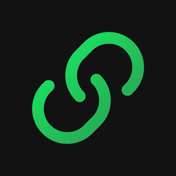

Keep tracks together, even on shuffle
Links is a Spotify companion app for desktop. Chain tracks like Part 1 and Part 2 together, and they'll always play in order — without turning off shuffle for everything else.
Requires a Spotify Premium account.
How it works
- Install Links and connect your Spotify account.
- Search for a track and link it to the ones that should follow it.
- Keep listening on shuffle — Links watches for a linked track and queues its partner the moment it starts playing.
Before you install
Your OS will flag Links on first open — that's expected
Links is a small independent project, not something from a large registered publisher, so Windows and Mac both show a caution screen the first time you open any app like this — signed or not, it's just what an unfamiliar publisher looks like to them. It isn't a sign anything's wrong, and you only see it once.
Show me the Windows steps
Click More info on the blue screen, then Run anyway. That's it — Links opens normally from then on.
Show me the Mac steps
Right-click (or Control-click) the Links app, choose Open, then confirm in the dialog that appears. Opening it from the regular double-click will show the same warning with no way past it — right-click is what unlocks the "Open" option.